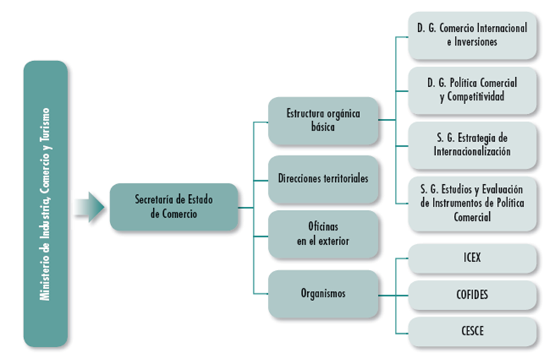

1. Agencies of Entities
Agencies and entities that provide information related to the financing of international trade operations
- The basic financing is private financing offered by banks and other financial institutions to the exporter and presented commercially according to the needs of companies (credit, loan, discount policies, advances on documents, hybrid financing and means-of-payment services, etc.)
- On the other hand and directly dependent on the nature of the international operation to be financed and its regulation for the general interest of the country, there is the option of public or semi-public financing, an option most of which represents a complement or aid to the base private financing.
It is for this reason that, when proposing the development of the functions related to the financing of the company of international sales operations, the first step must consist of an exhaustive knowledge of the characteristics of those public bodies and entities that offer the necessary services, as well as the form of access to the funds provided for in the general state budgets and the contact procedure.
The available information relating to the financing of international operations provided by public entities comes essentially from:
- Secretary of State for Trade
-
Under the Ministry of Industry, Trade and Tourism, and their dependent agencies exercise specific functions of support, aid and financing to companies with their own autonomy. o.
- Public entities and autonomous body
-
Organizations dependent on the various regional governments, created for the aid and promotion of the international activity of community-integrated enterprises.
- Chambers of Commerce
-
Which are public law corporations with advisory and collaboration functions with the Public Administration.

Different bodys of Secretary of state for trade, for what?
Licensed under the Creative Commons Attribution Share Alike License 4.0